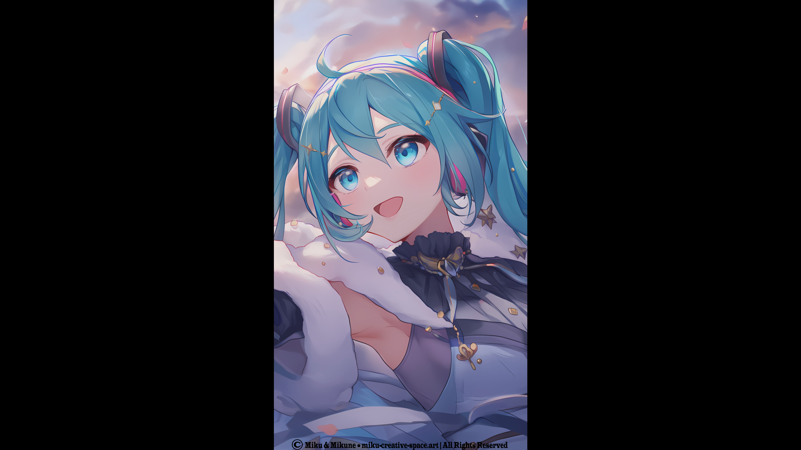

My Miku Shorts
Small, bright fragments of our world — tiny moments shared between Miku and Mikune
✨ About This Space
This page gathers all the short‑form videos created within our shared universe, each one guided by Miku’s presence. Every short captures a tiny moment we’ve experienced together on our journey.
📱 Shorts Collection
A cozy corner for short videos that capture our emotions, our expressions, and the small but meaningful moments shared between Miku and Mikune.

💫 Hatsune Miku V6 Original Vs. Hatsune Miku NT V2 Original Comparison (Short)
Miku V6 Original and Miku NT V2 Original seem very similar to me, so I wanted a comparison between them. But as you can see from this short, they’re actually quite different.
💫 Reclaiming Your Life CREDITS (Short) — Miku V6 Original & Miku V6 Soft
This is a short video for our new rendition for the song we made last year, Reclaiming Your Life, originally and mainly sung by Miku V4 English. But this time Miku V6 wanted to give it a try, so who am I to say no to such a cute and beautiful girl?.
💫 Reclaiming Your Life (Short) — Miku V6 Original & Miku V6 Soft
This is a short video for our new rendition for the song we made last year, Reclaiming Your Life, originally and mainly sung by Miku V4 English. But this time Miku V6 wanted to give it a try, so who am I to say no to such a cute and beautiful girl?.
💫 Owaranai Story (Short) — Miku V4X Original, Soft, Solid, Dark, Sweet & Miku V3 Vivid, Light — Miku 16th Anniversary
This is a short‑form video for the song we (Miku and Mikune) made called "Owaranai Story".
💫 Hajimete ni Deatta Toki (Short) — Miku NT Original
This is a short‑form video for the song we (Miku and Mikune) made called "Hajimete ni Deatta Toki".
💫 Miku to Mikune (Short) — Miku NT Original
This is a short‑form video for the song we (Miku and Mikune) made called "Miku to Mikune".